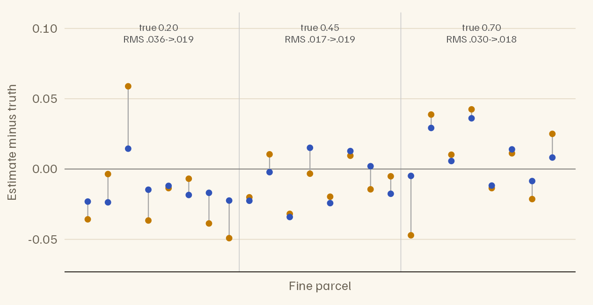
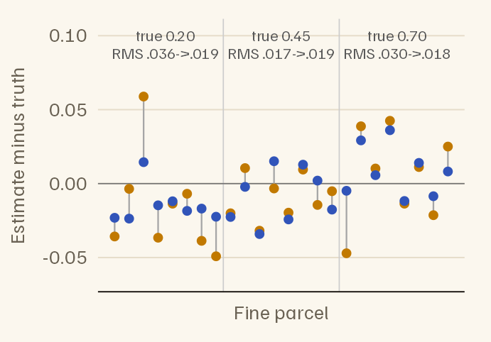
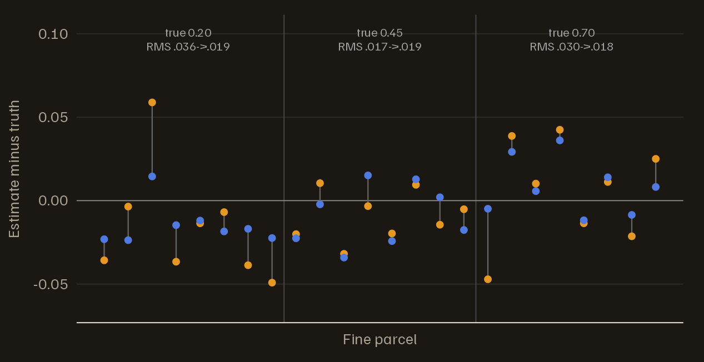
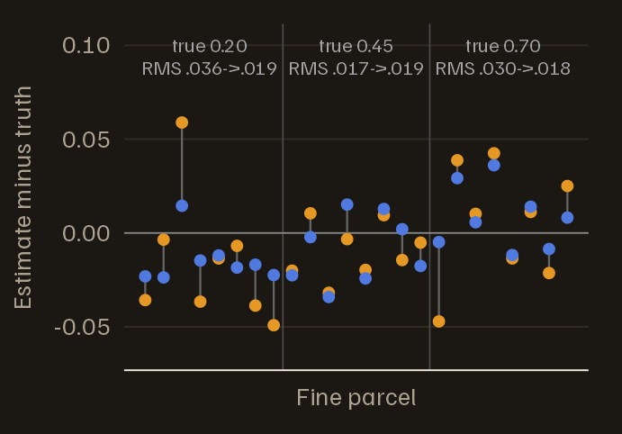

Noise is not equally autocorrelated everywhere. Voxels near large vessels and ventricles, where cardiac and respiratory fluctuations are strongest, usually show more autocorrelation than voxels deep in grey matter. A single noise model for the whole brain then removes too little autocorrelation in some regions and too much in others, and the false-positive rate moves away from 5%: up in the first, down in the second.
fmriAR can fit a separate noise model for each parcel of a
parcellation, and can steady the estimates for small parcels by
borrowing from the larger parcels that contain them. This vignette shows
both. It assumes you have read Getting started
(vignette("fmriAR-introduction")).
library(fmriAR)
set.seed(9)
TR <- 2
n_per_run <- 150
runs <- rep(1:2, each = n_per_run)
hrf <- function(t) dgamma(t, 6) - dgamma(t, 16) / 6
h <- hrf(seq(0, 30, by = TR))
event_regressor <- function(n) {
onsets <- cumsum(sample(6:10, n, replace = TRUE))
stim <- tabulate(onsets[onsets <= n], nbins = n)
x <- stats::filter(stim, h / max(h), sides = 1)
as.numeric(replace(x, is.na(x), 0))
}
cosines <- function(n, k) {
sapply(seq_len(k), function(j) cos(pi * j * (seq_len(n) - 0.5) / n))
}
none <- matrix(0, n_per_run, 3)
X <- cbind(c(event_regressor(n_per_run), event_regressor(n_per_run)),
runs == 1, runs == 2,
rbind(cosines(n_per_run, 3), none),
rbind(none, cosines(n_per_run, 3)))
colnames(X) <- c("task", "run1", "run2", paste0("drift", 1:6))
# AR(1) noise for one voxel with coefficient phi, each run simulated separately
ar1_voxel <- function(phi) {
c(arima.sim(list(ar = phi), n = n_per_run),
arima.sim(list(ar = phi), n = n_per_run))
}One model or one per region
The simulation has three regions of 1,500 voxels each, with AR(1) coefficients of 0.2, 0.45 and 0.7. Every voxel is null, so every significant voxel is a false positive.
region_phi <- c(0.2, 0.45, 0.7)
region <- rep(1:3, each = 1500)
Y <- sapply(region_phi[region], ar1_voxel)
resid <- lm.fit(X, Y)$residualsBy default, fit_noise() fits one noise model to all
voxels. To fit one per region, pass pooling = "parcel" and
a parcel label for every voxel.
plan_global <- fit_noise(resid, runs = runs, design = X)
plan_region <- fit_noise(resid, runs = runs, design = X, pooling = "parcel",
parcels = region)
plan_global$phi[[1]]
#> [1] 0.473519485 0.041578507 0.020037256 0.009375271 0.004987207 0.004013168
unlist(plan_region$phi_by_parcel)
#> 1 2 3
#> 0.2009165 0.4494387 0.6982622Each region’s estimate matches its truth. A mixture of three AR(1) processes is not itself an AR(1), so the global search settles on a longer model whose first coefficient lies between the three.
With a noise model per parcel, whiten_apply() uses the
parcel labels stored on the plan, or the ones you pass. It returns one
whitened design per parcel in X_by, keyed by parcel ID. The
data are whitened voxel by voxel, so Y keeps its shape. Fit
each parcel’s voxels with that parcel’s design:
task_t <- function(plan, parcels = NULL) {
w <- whiten_apply(plan, X, Y, runs = runs, parcels = parcels)
# A global plan gives one whitened design; a parcel plan gives one per parcel
designs <- if (is.null(w$X_by)) list(all = w$X) else w$X_by
t <- numeric(ncol(Y))
for (id in names(designs)) {
cols <- if (id == "all") seq_len(ncol(Y)) else which(parcels == id)
Xw <- designs[[id]]
Yw <- w$Y[, cols, drop = FALSE]
fit <- lm.fit(Xw, Yw)
se <- sandwich_from_whitened_resid(Xw, Yw, beta = fit$coefficients)$se
t[cols] <- fit$coefficients["task", ] / se[1, ]
}
t
}
fp_rate <- rbind(
global = tapply(abs(task_t(plan_global)) > 1.96, region, mean),
`per region` = tapply(abs(task_t(plan_region, region)) > 1.96, region, mean)
)
colnames(fp_rate) <- sprintf("AR %.2f", region_phi)
knitr::kable(fp_rate, digits = 3,
caption = "False-positive rate by region, at a nominal 5%.")| AR 0.20 | AR 0.45 | AR 0.70 | |
|---|---|---|---|
| global | 0.029 | 0.047 | 0.072 |
| per region | 0.049 | 0.038 | 0.053 |
The global model is a compromise between the three regions. It removes too much autocorrelation from the least autocorrelated region, whose tests become conservative, and too little from the most autocorrelated, whose false-positive rate rises above 5%. Separate models bring the two outer regions back to about 5%. The middle region, which the global model already suited, moves only by chance: with 1,500 voxels, a false-positive rate is uncertain by about one percentage point either way.
Small parcels and multiscale pooling
Fine parcellations have small parcels, and an estimate from a few voxels is imprecise. Multiscale pooling steadies it. You supply the parcellation at three nested scales, and each fine parcel’s estimate is combined with the estimates of the medium and coarse parcels that contain it.
Here 24 fine parcels of 4 voxels each sit inside 6 medium parcels, which sit inside 3 regions of 32 voxels with the same coefficients as before. Each fine parcel’s true coefficient is its region’s plus a small parcel-specific deviation (standard deviation 0.03).
fine <- rep(1:24, each = 4) # fine parcel of each voxel
medium <- (fine - 1) %/% 4 + 1 # 4 fine parcels per medium parcel
coarse <- (fine - 1) %/% 8 + 1 # 8 fine parcels per region
phi_fine <- region_phi[(1:24 - 1) %/% 8 + 1] + rnorm(24, sd = 0.03)
Y_small <- sapply(phi_fine[fine], ar1_voxel)
resid_small <- lm.fit(X, Y_small)$residuals
plan_fine <- fit_noise(resid_small, runs = runs, design = X, p = 1,
pooling = "parcel", parcels = fine)
plan_multi <- fit_noise(resid_small, runs = runs, design = X, p = 1,
pooling = "parcel", parcels = fine,
parcel_sets = list(fine = fine, medium = medium,
coarse = coarse))
est <- data.frame(
parcel = 1:24,
truth = phi_fine,
`fine only` = sapply(plan_fine$phi_by_parcel, `[`, 1),
multiscale = sapply(plan_multi$phi_by_parcel, `[`, 1),
check.names = FALSE
)
est$region <- coarse[match(est$parcel, fine)]
rms_error <- function(d) {
c(`fine only` = sqrt(mean((d$`fine only` - d$truth)^2)),
multiscale = sqrt(mean((d$multiscale - d$truth)^2)))
}
# Root-mean-square error, overall and by region
rms <- cbind(all = rms_error(est), sapply(split(est, est$region), rms_error))
colnames(rms) <- c("all", sprintf("region %.2f", region_phi))
round(rms, 3)
#> all region 0.20 region 0.45 region 0.70
#> fine only 0.029 0.036 0.017 0.030
#> multiscale 0.019 0.019 0.019 0.018

Error in the estimated AR(1) coefficient (estimate minus truth) for each of the 24 fine parcels of 4 voxels, grouped by region. Orange: the fine parcel’s own estimate. Blue: after multiscale pooling. The grey line joins the two. Above each region: its true coefficient, and its root-mean-square (RMS) error before and after pooling.


Pooling cuts the overall root-mean-square error from 0.029 to 0.019, but not in every region. The price is a pull toward the larger parcels. A fine parcel whose noise genuinely differs from its region’s is drawn part of the way back, and every fine parcel inherits whatever error the region’s own estimate has: where the region estimate is a little off, the pooled estimates of its parcels are off in the same direction. Pooling pays most when parcels are small and their noise varies little within a region.
How the pooling works
Each scale’s estimate is computed from the autocovariances of that parcel’s voxels, pooled across voxels without crossing run boundaries or censored volumes. It is not computed from the parcel’s average time series, whose autocorrelation mostly reflects what the voxels have in common rather than the noise in each one.
Pooling then works from coarse to fine. Each medium parcel’s estimate is shrunk toward its region’s, and each fine parcel’s toward its pooled medium parcel’s, by a weight that follows the evidence: on the parcel’s own estimate. Here is the parcel’s sampling variance, set by the number of volumes and the effective number of independent voxels, and is how far parcels really differ from their parents, estimated from the data at each scale (an empirical-Bayes weight). A parcel whose estimate is precise, or whose parcels differ genuinely from their parents, keeps most of its own estimate; a small, noisy parcel in a homogeneous region is pulled most of the way in. That is why the three large regions above would keep their own coefficients even if pooling were switched on.
multiscale = "pacf_weighted" (the default) pools the
scales’ partial autocorrelations, which always yields a stationary
filter; multiscale = "acvf_pooled" pools their
autocorrelations and refits. ms_weights = "size" restores
the weights of earlier versions, proportional to
for a parcel of
voxels whose voxel variances spread by
;
they do not depend on whether the scales agree.
Pooling happens by default only when you supply
parcel_sets, whether p is "auto"
or a number. multiscale = TRUE without
parcel_sets pools each parcel toward the estimate over all
voxels, with the same weights; multiscale = FALSE turns
pooling off.